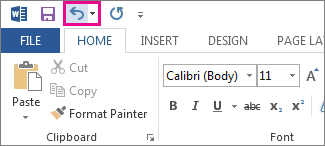

You can undo, redo, or repeat many actions in Microsoft Word, PowerPoint, and Excel. You can undo changes, even after you have saved, and then save again, as long as you are within the undo limits (By default Office saves the last 100 undoable actions).
To undo an action press Ctrl+Z.
If you prefer your mouse, click Undo on the Quick Access Toolbar. You can press Undo (or CTRL+Z) repeatedly if you want to undo multiple steps.

You can't undo some actions, such as clicking commands on the File tab or saving a file. If you can't undo an action, the Undo command changes to Can't Undo.
To undo several actions at the same time, click the arrow next to Undo , select the actions in the list that you want to undo, and then click the list.